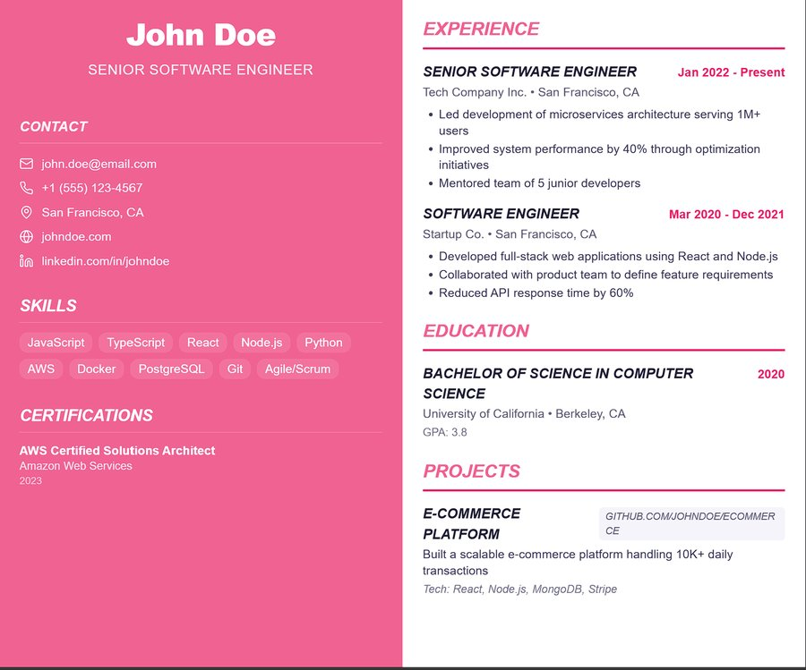
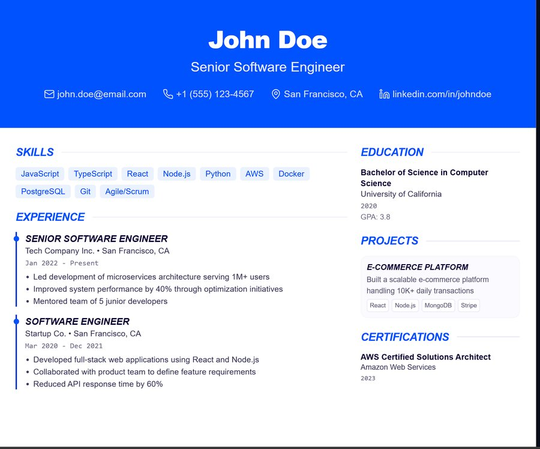
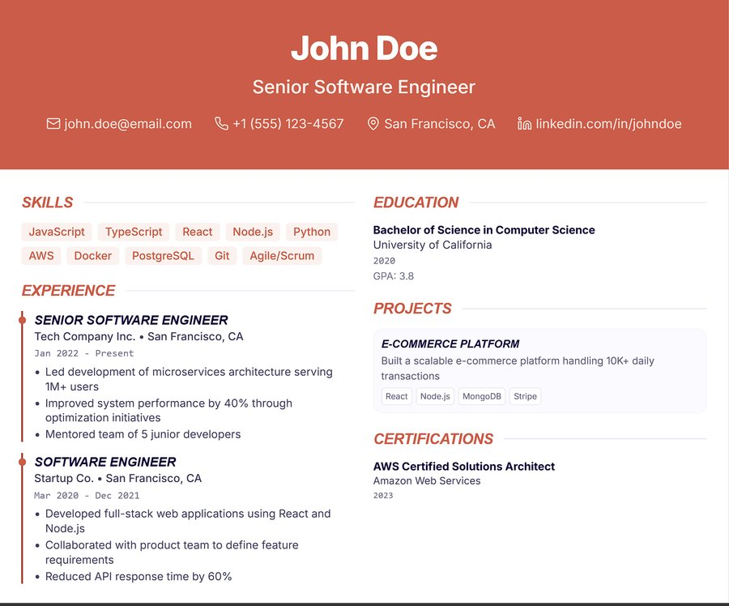
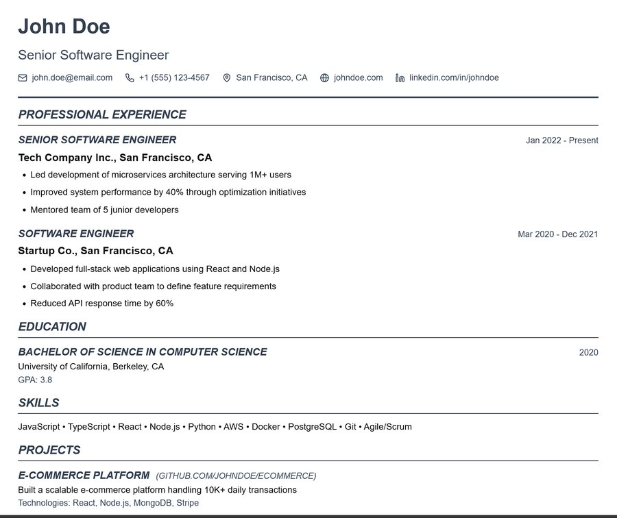

Designed a launch campaign for a jewelry line, from concept and copy to the final layout. I used deep blue, silver, and dark backgrounds so the stones stand out and the brand feels exclusive.
Designed the brochure, job posts, festival greetings, and promotional posts for an overseas recruitment agency. Every piece looks like it came from the same company, whether printed or posted online.
A free CV builder with no login and no watermark. I designed and built it myself over 4 months.
Founder and designer. Brand, product design, website, 44+ templates, 30 career guides, and SEO.
Free, no login, no watermarks, instant PDF.
Why I built it
I wanted normal people to be able to make a CV without paying for it. When I searched on Google, I saw that most CV builders were slow to use, asked for a login, added watermarks you had to pay to remove, or cost too much for something as simple as a CV. I wanted people to open the site, make their CV, and download the PDF in seconds.
Who it’s for
People who are new in their career and looking for their first job, and students looking for internships.
What I looked at
I started with Google searches to see what competitors were doing. Most of them had been around for years, and I saw the same problems again and again: too much hassle and too high a price for a single CV. That told me what to remove from my own product: login, watermarks, and payment.
What I built
I did everything myself: the brand, the design, the website, 44+ templates, 30 career guides, and the system that lets people build a CV and download it. The hardest part was making it work properly on a phone, so people can build and download a CV from their mobile too.
Fill in your details on the left and watch the CV update on the right.




Templates in different styles and colors.
The same flow works on a phone.
Design decisions
Green for freedom. I chose mint green because it reminds me of a forest: fresh, open, and free. That’s the feeling I wanted for the product, since it’s free and doesn’t trap you behind a login.
Private by design. There’s no login, and your data stays in your own browser. Nothing is stored on a server.
Growth
For the first 2 months, the site got about 4 impressions a day. Then I worked on the SEO and meta data. In the third month, impressions and clicks started to grow, and I kept improving it after that. Over 6 months, the site reached 7K+ search impressions.
Search impressions over 6 months.
What’s next
Clicks are still low compared with impressions, so my next job is improving the page titles and rankings so more people who see the site actually open it.